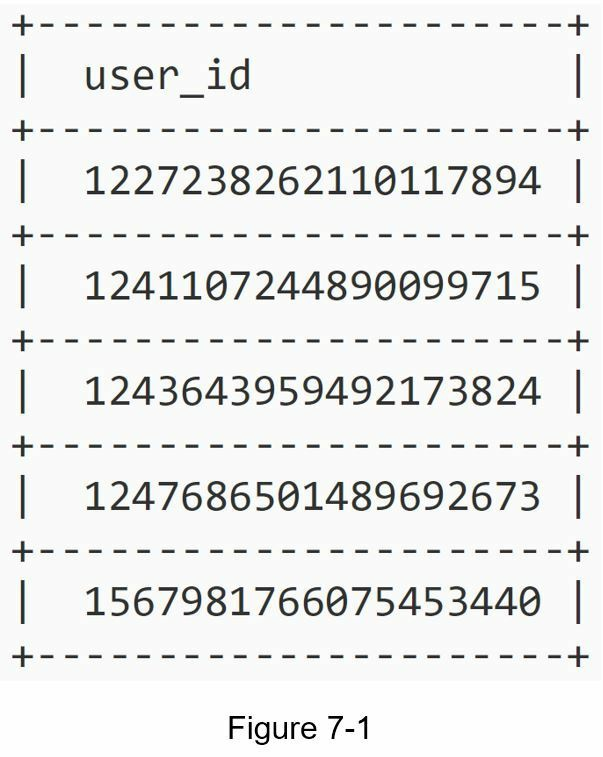
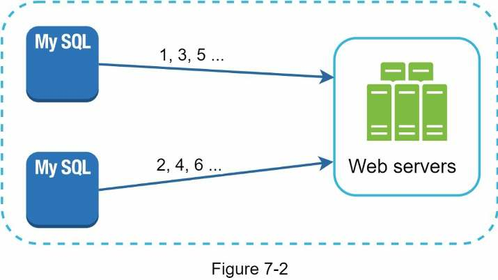
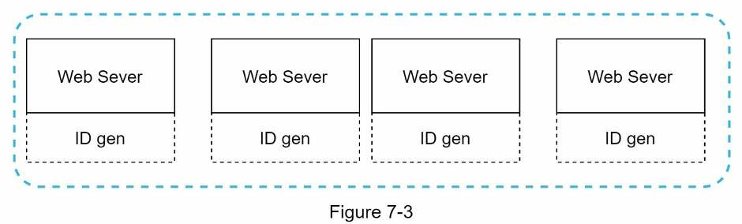
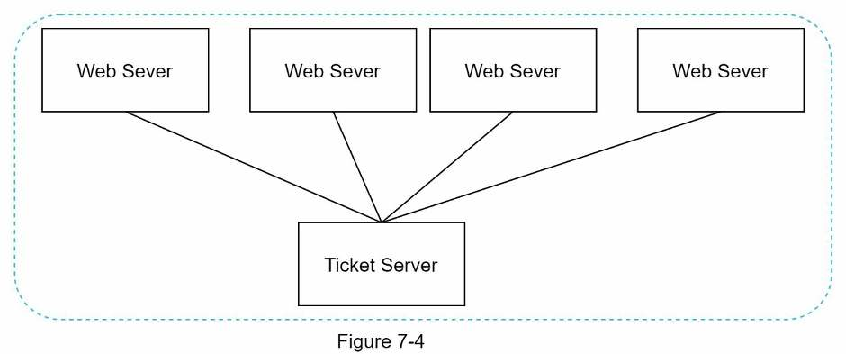
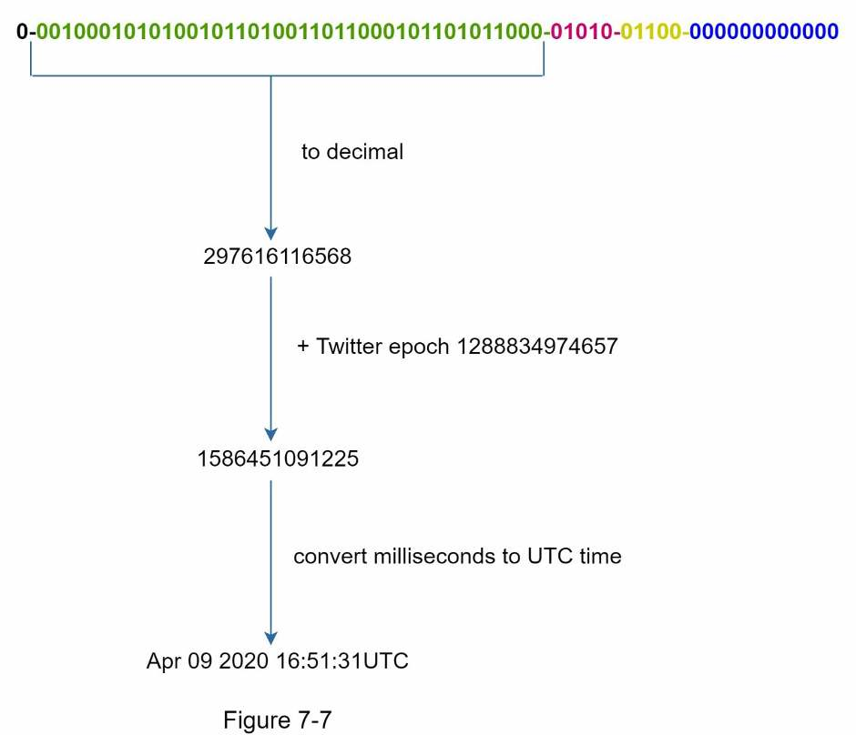

Chapter 7 · Design problem
Design a Unique ID Generator in Distributed Systems
Why auto_increment breaks once you have many databases, the four classic ways to mint IDs, and why Twitter's Snowflake layout wins when you need 64-bit, time-sortable IDs.
TL;DR
- Problem: generate IDs that are unique, numeric, 64-bit, ordered by time, at 10,000+ IDs/sec across many servers. A single database's
auto_incrementcan't keep up, and coordinating it across databases is slow. - Four options: multi-master replication (step by k), UUID (128-bit random), ticket server (one central counter), Twitter Snowflake (split the 64 bits into fields).
- Winner: Snowflake.
1 sign | 41 timestamp | 5 datacenter | 5 machine | 12 sequence. - Timestamp sits in the high bits, so IDs sort by time. 41 bits of milliseconds ≈ 69 years from a custom epoch.
- 12-bit sequence = 4,096 IDs per millisecond per machine; it resets to 0 every millisecond.
- Datacenter and machine IDs are fixed at startup. Changing them by accident can cause ID collisions.
- Wrap-up talking points: clock synchronization (NTP), tuning section lengths, high availability.

Interview answer skeleton
If asked this in an interview, walk through these four beats. Each maps to a section below.
- Clarify (≈5 min) Ask: must IDs be unique? Sortable? Numeric only? What length (64-bit)? What scale? Then restate the requirements: unique, numeric, 64-bit, time-ordered, 10k/s.
- Options → pick one (≈15 min) Name multi-master, UUID, ticket server and Snowflake. Give one reason each of the first three fails a requirement, then choose Snowflake and draw the bit layout.
- Deep dive (≈15 min) Datacenter and machine IDs are fixed at startup. The 41-bit timestamp gives ~69 years from a custom epoch. The 12-bit sequence gives 4,096 IDs/ms per machine.
- Wrap up (≈5 min) Clock skew between machines (NTP), trading bits between fields, and keeping the generator highly available.
Step 1Understand the problem
Pin down what an ID must look like before choosing how to make it.
The obvious answer is a primary key with auto_increment. In a distributed system it fails for two reasons. A single database server isn't large enough, and generating unique IDs across multiple databases with low delay is hard.
| You ask | Interviewer says |
|---|---|
| What are the characteristics of the IDs? | Unique and sortable. |
| Does each new ID increment by 1? | No. IDs increase with time but not necessarily by 1. IDs created in the evening are larger than IDs from that morning. |
| Numeric only? | Yes. |
| Length? | Must fit in 64 bits. |
| Scale? | 10,000 IDs per second. |
Requirements
- IDs are unique
- IDs are numeric only
- IDs fit into 64 bits
- IDs are ordered by date
- Can generate over 10,000 unique IDs per second

Step 2High-level design: four options
Compare against the requirements. Only Snowflake meets all of them.
| Option | How it works | 64-bit | Time-sorted | Scales across DCs | No single point of failure |
|---|---|---|---|---|---|
| Multi-master | Each DB's auto_increment steps by k (number of servers) | ✓ | ✗ | ✗ | ✓ |
| UUID | Each server generates random 128-bit IDs on its own | ✗ | ✗ | ✓ | ✓ |
| Ticket server | One central DB with auto_increment | ✓ | ✓ | ✗ | ✗ |
| Snowflake | Split the 64 bits into timestamp + location + sequence | ✓ | ✓ | ✓ | ✓ |
Option 1 · Multi-master replication
Use each database's auto_increment, but increment by k instead of 1, where k is the number of database servers. With 2 servers, one produces 1, 3, 5… and the other 2, 4, 6…. ID capacity grows with the number of database servers.

Pros
- Simple; reuses database features
- Throughput scales with the number of DB servers
Cons
- Hard to scale across multiple data centers
- IDs don't increase with time across servers
- Adding or removing a server breaks the scheme
Option 2 · UUID
A UUID is a 128-bit number, for example 09c93e62-50b4-468d-bf8a-c07e1040bfb2. Collisions are extremely unlikely: you'd need to generate 1 billion UUIDs per second for about 100 years to reach a 50% chance of a single duplicate. Each web server runs its own ID generator, so no coordination is needed.

Pros
- Trivial to generate; no synchronization between servers
- Scales with the web servers
Cons
- 128 bits, but we need 64
- Not sortable by time
- Can contain non-numeric characters
Option 3 · Ticket server
Developed at Flickr: a single, central database whose only job is handing out auto_increment numbers to every web server.

Pros
- Numeric IDs
- Easy to implement; fine for small to medium scale
Cons
- Single point of failure: if it goes down, everything that needs IDs breaks
- Running several ticket servers brings back data-synchronization problems
Option 4 · Twitter Snowflake ✓
The idea is divide and conquer. Instead of generating the whole ID at once, split the 64 bits into sections that can each be produced locally without coordination.
| Section | Bits | Meaning |
|---|---|---|
| Sign | 1 | Always 0. Reserved for future use (could distinguish signed from unsigned). |
| Timestamp | 41 | Milliseconds since a custom epoch. Twitter's default epoch is 1288834974657 (Nov 04, 2010, 01:42:54 UTC). |
| Datacenter ID | 5 | 25 = 32 datacenters |
| Machine ID | 5 | 25 = 32 machines per datacenter |
| Sequence | 12 | Incremented for each ID on that machine/process. Resets to 0 every millisecond. |
Step 3Deep dive: Snowflake
Two fields are fixed at startup (datacenter, machine). Two are generated at runtime (timestamp, sequence).
Datacenter & machine IDs
These are chosen when the generator starts and normally never change while it runs. Any change needs careful review: if two machines end up with the same datacenter and machine ID, they can produce the same IDs.
Timestamp (41 bits)
The timestamp is the most important section. Because it occupies the highest bits and grows over time, comparing two IDs numerically compares their creation times. To read the time back out of an ID, take the 41 timestamp bits, convert them to decimal, add the epoch, and convert the result to UTC:

Sequence number (12 bits)
212 = 4,096 values. The sequence stays 0 unless the same server generates more than one ID in the same millisecond. A single machine can therefore produce at most 4,096 IDs per millisecond.
Generate a few IDs quickly and watch the sequence number go up when two IDs share a millisecond. Then paste an ID back in to decode it.
Step 4Wrap up
We compared multi-master replication, UUID, a ticket server and Snowflake, and chose Snowflake because it meets every requirement and scales in a distributed environment. If there's time left, raise these:
- Clock synchronization. The design assumes every ID server has the same clock. That may not hold across machines, or even across cores on one machine. Network Time Protocol (NTP) is the most popular fix. Solving it fully is out of scope, but show that you know the problem exists.
- Section length tuning. For example, use fewer sequence bits and more timestamp bits for low-concurrency, long-lived applications.
- High availability. An ID generator is mission-critical, so it must be highly available.
Self-test
Why doesn't a database auto_increment primary key work for a distributed ID generator?
A single database server isn't large enough for the load, and generating unique IDs across multiple databases with low delay is hard.
What are the five requirements in this chapter's problem?
Unique, numeric only, fits in 64 bits, ordered by date, and more than 10,000 IDs per second.
How does multi-master replication generate IDs, and what are its three drawbacks?
Each database's auto_increment steps by k (the number of servers). Drawbacks: hard to scale across data centers, IDs don't increase with time across servers, and adding or removing a server breaks the scheme.
Why is UUID rejected here even though it needs no coordination?
It's 128 bits (we need 64), it isn't sortable by time, and it can be non-numeric.
What is a ticket server and what is its main weakness?
A single central database that hands out auto_increment IDs (Flickr's approach). It is a single point of failure, and running several of them brings back synchronization problems.
Draw the Snowflake bit layout.
1 sign | 41 timestamp | 5 datacenter | 5 machine | 12 sequence, totaling 64 bits.
Why are Snowflake IDs sortable by time?
The timestamp occupies the most significant bits, so a later millisecond always gives a larger number.
How long does a 41-bit millisecond timestamp last, and how do you push overflow further away?
241 − 1 ms ≈ 69 years. Use a custom epoch close to today, since the years count from the epoch.
How many IDs can one machine generate per millisecond, and why?
4,096, because the sequence field has 12 bits (212). It resets to 0 each millisecond.
Which Snowflake fields are fixed at startup and which are generated at runtime? What's the risk with the fixed ones?
Datacenter and machine IDs are fixed at startup. Timestamp and sequence are generated at runtime. Accidentally changing or duplicating datacenter/machine IDs can cause ID collisions.
Name three wrap-up talking points for this design.
Clock synchronization (NTP), tuning section lengths (e.g. more timestamp bits for low-concurrency, long-lived apps), and high availability.
Terms to know
- auto_increment
- A database feature that assigns the next integer to each new row. Simple, but tied to a single server.
- UUID
- Universally unique identifier: a 128-bit value generated independently, with negligible collision probability.
- Ticket server
- A dedicated central database whose only job is issuing incrementing IDs (Flickr).
- Snowflake
- Twitter's 64-bit ID scheme: timestamp + datacenter + machine + sequence.
- Epoch
- The zero point the timestamp counts from. Snowflake uses a custom epoch, not 1970.
- NTP
- Network Time Protocol: keeps machine clocks synchronized.